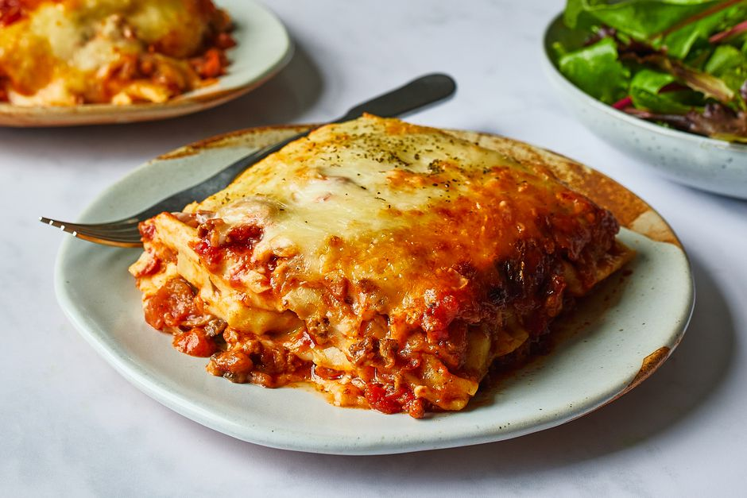

Brandon's Famous Lasagna

Delicious vegetable lasagna with a white creamy sauce. A family favorite!
Snap Shot
Prep: 25min
Cook: 45min
Total: 1hr 10min
Serving: 8
Ingredients
9 lasagna noodles
1/4 cup margarine
1/4 cup all-purpose flour
½ teaspoon salt
¼ teaspoon ground black pepper
1 cup milk
½ cup vegetable broth, or as needed
2 tablespoons white wine
½ cup grated Parmesan cheese
1 cup light ricotta cheese
1 egg
1 egg white
1 tablespoon olive oil
2 cups coarsely shredded carrots
2 cups coarsely chopped zucchini
1 (10 ounce) package frozen chopped spinach, thawed and drained
1 cup shredded mozzarella cheese
Steps